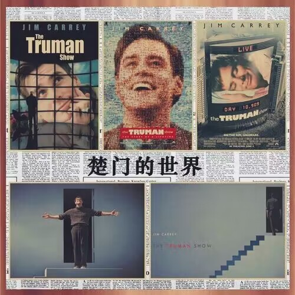

《楚门的世界》
《楚门的世界》，翻译为中文就是：真人的世界。电影的主人公楚门从小就生活在桃源岛，过着简单且充实的日子。 然而，楚门不知道的是：他的生活其实是一档名叫《楚门秀》的真人秀节目。 桃源岛是一个巨大的摄影棚，安装了多达5000余个隐秘的摄像头，天空、星星和海岸线全是布景，楚门的父母、妻子、朋友，甚至是路上遇到的陌生人，都是电视公司请来的演员。 楚门的一举一动都被全世界的观众观看着、审视着。
他生活在一个巨大的谎言之中，看似荒诞的世界在楚门眼里每天重复上演着。 他每天经过的街道永远会有两个老头在买报纸，在所在的公司永远是在楚门到来之后才开始认真工作，甚至他身为妻子的医生其实并不怎么会看病。 这一切在楚门的心中产生过疑惑。 甚至当楚门看到自己死去的父亲又再次出现在他的面前时，楚门再也不能淡定了，他开始怀疑自己的真实性。

楚门就生活在一座围城之中，他的一切都被24小时监控着，他不仅没有隐私而且甚至朋友妻子都是和他逢场作戏。
生活中还有比这更令人不堪的事情吗？
而让剧情走向高潮的导火索是：施维亚,这个被剧组安排成为楚门情人的女子。
施维亚本身就是楚门的粉丝，而当施维亚在和楚门接触之后被楚门的善良和正直感动了。
她想帮助楚门逃离这个虚拟的世界，在离开之余施维亚给了楚门暗示。在经历小时候的父亲复活，汽车广播无辜播放自己的踪迹，甚至天上下雨都是刻意安排等一些列离奇事件之后。
楚门再也不能忍受。
而楚门所生活的世界是一个远离大陆的孤岛：桃源岛。 尽管岛的名字具有诗意，但是这里面完全是一桩肮脏的交易。 一场以真人秀为手段，商业广告为盈利的目的的交易。 最终楚门开始逃离这里，但是事情的发展并不是像楚门所预料的那样。
他在逃亡的路上处处碰壁，受到电视节目制作人的重重阻挠，但是当自己的自由甚至隐私也受到了侵犯时，生活在这样的世界也是一种悲哀。 后来，像上帝般操纵着楚门的导演，向楚门道出了真相。楚门最终突破心理的枷锁，勇敢的走出了虚假的世界。
现实中仍有千千万万的“楚门”无法逃脱“桃源岛”。 你相信吗？ 我们都可能是楚门，被周围的环境束缚着，会因大众的普遍看法而放弃自己的观点，会因身边亲人好友的反对而抛弃自己的梦想，会因恐惧而不敢跳出舒适圈。 若被禁锢在世俗观点和传统观念中，囿于他人的眼光，或许会和楚门一样，过着被操纵的生活。